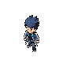
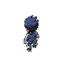
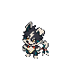
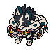

Kael · overworld em câmera elevada
Frente SW e costas NW. Cabelo azul-marinho, jaqueta com faixas claras, fones turquesa e duas tiras presas à cintura.
Frente · SW
Costas · NW
Canvas80×80 por vista; ocupação real20×47. Duas poses estáticas, sem animação ou integração. Pivô de chão proposto(40,65).
PNG frente · PNG costas · Aseprite editável · Produção e revisão
Comparação de escala
Kael → Papisco → Gambalhote → Alvacordo. Mesma densidade de pixels e ponto de apoio, sem redimensionar os Soulmonsters.
KaelPapisco
Gambalhote Alvacordo
Alvacordo
A comparação é uma prancha de arte; escala, colisão e profundidade ainda precisam ser conferidas no mapa.